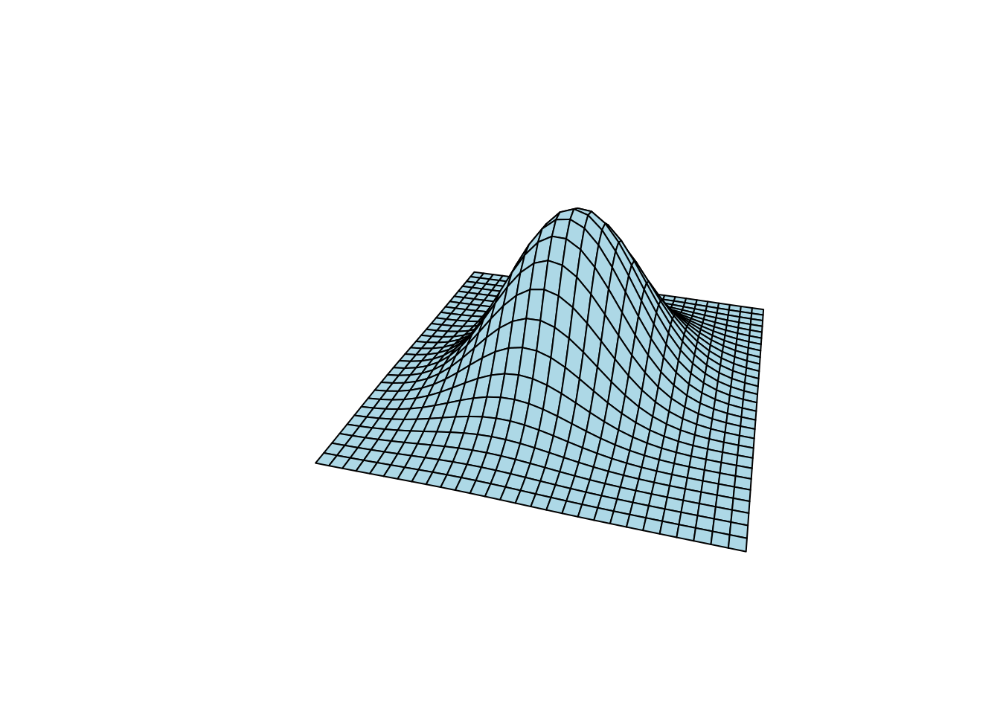
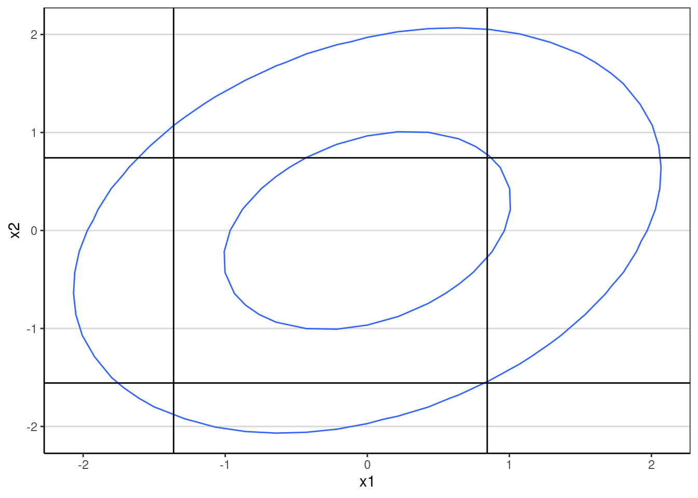
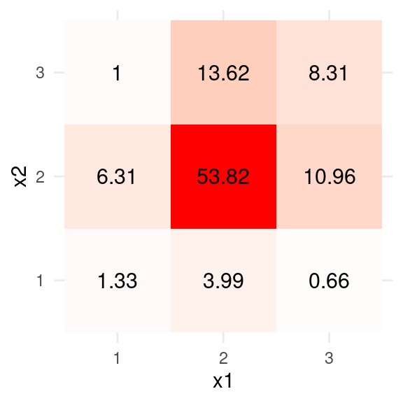

library(lavaan)
library(ggplot2) # for plotting
library(polycor) # for estimating polychoric correlations
library(mvtnorm)
library(numDeriv) # getting numerical derivatives
theme_set(theme_classic() +
theme(panel.grid.major.y = element_line(color = "grey85")))Weighted Least Squares
Statistics
Recently I was working on a revision for a paper that involves structural equation modeling with categorical observed variables, and it uses a robust variant of weighted least square (also called asymptotic distribution free) estimators. Even though I had some basic understanding of WLS, the experience made me aware that I hadn’t fully understand how it was implemented in software. Therefore, I decided to write a (not so) short note to show how the polychoric correlation matrix can be estimated, and then how the weighted least squares estimation can be applied.
Load packages
Data
The data will be three variables from the classic Holzinger & Swineford (1939) data set. The variables are
x1: Visual perceptionx2: Cubesx3: Lozenges
To illustrate categorical variables, I’ll categorize each of the variables into three categories using the cut function in R.
# Holzinger and Swineford (1939) example
HS3 <- HolzingerSwineford1939[ , c("x1","x2","x3")]
# ordinal version, with three categories
HS3ord <- as.data.frame(lapply(HS3, function(v) {
as.ordered(cut(v, breaks = 3, labels = FALSE))
}))Here is the contingency table of the first two items
table(HS3ord[1:2])#> x2
#> x1 1 2 3
#> 1 4 19 3
#> 2 12 162 41
#> 3 2 33 25Polychoric Correlations
To use WLS, we first assume that each categorical variable has an underlying normal variate that has been categorized, and usually it’s assumed to be a standard normal variable so that the scale can be fixed. Based on the contingency table for each pair of observed variables, we infer the correlation of the corresponding pair of underlying response variates. That correlation is called the polychoric correlation.
lavaan
There are different ways to estimate the polychoric correlations, but generally it involves numerical optimization to find maximum likelihood or psuedo maximum likelihood values. In lavaan it is easy to estimate that:
# polychoric correlations, two-stage estimation
pcor_lavaan <- lavCor(HS3ord, ordered = names(HS3ord),
se = "robust.sem", output = "fit")
subset(
parameterestimates(pcor_lavaan),
op %in% c("~~", "|") # polychoric correlations and thresholds
)#> lhs op rhs est se z pvalue ci.lower ci.upper
#> 1 x1 ~~ x1 1.000 0.000 NA NA 1.000 1.000
#> 2 x2 ~~ x2 1.000 0.000 NA NA 1.000 1.000
#> 3 x3 ~~ x3 1.000 0.000 NA NA 1.000 1.000
#> 4 x1 ~~ x2 0.317 0.070 4.534 0 0.180 0.455
#> 5 x1 ~~ x3 0.508 0.060 8.484 0 0.391 0.625
#> 6 x2 ~~ x3 0.304 0.066 4.616 0 0.175 0.433
#> 7 x1 | t1 -1.363 0.103 -13.239 0 -1.565 -1.162
#> 8 x1 | t2 0.844 0.083 10.224 0 0.682 1.006
#> 9 x2 | t1 -1.556 0.115 -13.508 0 -1.782 -1.331
#> 10 x2 | t2 0.741 0.080 9.259 0 0.584 0.898
#> 11 x3 | t1 -0.353 0.074 -4.766 0 -0.498 -0.208
#> 12 x3 | t2 0.626 0.078 8.047 0 0.473 0.778The default in lavaan uses a two-stage estimator that first obtains the maximum likelihood estimate of the thresholds, and then obtain the polychoric correlation using the DWLS estimator with robust standard errors, which will be further discussed.
Thresholds
The thresholds are the cut points in the underlying standard normal distribution. For example, the proportions for x1 are
(prop_x1 <- prop.table(table(HS3ord$x1)))#>
#> 1 2 3
#> 0.08637874 0.71428571 0.19933555This suggests that a sensible way to estimate these cut points is
(thresholds_x1 <- qnorm(cumsum(prop_x1)))#> 1 2 3
#> -1.363397 0.843997 Infwhich basically matches the estimates in lavaan. Do the same for x2:
(thresholds_x2 <- qnorm(cumsum(prop.table(table(HS3ord$x2)))))#> 1 2 3
#> -1.5564491 0.7413657 InfNote that there are only two thresholds with three categories. This may be more readily seen in a graph:
ggplot(data.frame(xstar = c(-3, 3)),
aes(x = xstar)) +
stat_function(fun = dnorm) +
geom_segment(data = data.frame(tau = thresholds_x2[1:2],
density = dnorm(thresholds_x2[1:2])),
aes(x = tau, xend = tau, y = density, yend = 0))
The conversion using the cumulative normal density to obtain the thresholds is equivalent to obtaining \(\tau_j\) for the \(j\)th threshold (\(j = 1, 2\)) as solving for \[\Phi(\tau_j) - \Phi(\tau_{j - 1}) = \frac{\sum_i [x_i = j]}{N}, \] where \(\Phi(\cdot)\) is the standard normal cdf (i.e., pnorm() in R), \(\sum_i [x_i = j] = n_j\) is the count of \(x_i\) that equals \(j\), \(\Phi(\tau_0) = 0\), and \(\Phi(\tau_3) = 1\). Writing it this way would make it clearer how the standard errors (SEs) of the \(\tau\)s can be obtained. In practice, most software uses maximum likelihood estimation and obtain the asymptotic SEs by inverting the Hessian. Here’s an example to get the same results as in lavaan for the thresholds of x1, which minimizes \[Q(\tau_1, \tau_2) = \sum_{j = 1}^3 n_j \log [\Phi(\tau_j) - \Phi(\tau_{j - 1})]\] (see Jin & Yang-Wallentin, 2017, for example.)
lastx <- function(x) x[length(x)] # helper for last element
# Minimization criterion
Q <- function(taus, ns = table(HS3ord[ , 1])) {
hs <- pnorm(taus)
hs <- c(hs[1], diff(hs), 1 - lastx(hs))
- sum(ns * log(hs))
}
taus1_optim <- optim(c(-1, 1), Q, hessian = TRUE)
# Compare to lavaan
list(`lavaan` = parameterEstimates(pcor_lavaan)[7:8, c("est", "se")],
`optim` = data.frame(
est = taus1_optim$par,
se = sqrt(diag(solve(taus1_optim$hessian)))
)
)#> $lavaan
#> est se
#> 7 -1.363 0.103
#> 8 0.844 0.083
#>
#> $optim
#> est se
#> 1 -1.3639182 0.1028333
#> 2 0.8440422 0.0824186They are not exactly the same but are pretty close.
Polychoric correlations
Whereas the thresholds can be computed based on the proportions of each individual variable, the polychoric correlation needs the contingency table between two variables. The underlying variates are assumed to follow a bivariate normal distribution, which an example (with \(r = .3\)) shown below:
# Helper function
expand_grid_matrix <- function(x, y) {
cbind(rep(x, length(y)),
rep(y, each = length(x)))
}
x_pts <- seq(-3, 3, length.out = 29)
y_pts <- seq(-3, 3, length.out = 29)
xy_grid <- expand_grid_matrix(x = x_pts, y = y_pts)
example_sigma <- matrix(c(1, .3, .3, 1), nrow = 2)
z_pts <- dmvnorm(xy_grid, sigma = example_sigma)
z_grid <- matrix(z_pts, nrow = 29)
persp(x_pts, y_pts, z_grid, theta = 15, phi = 30, expand = 0.5,
col = "lightblue", box = FALSE)
With the thresholds set, a bivariate normal distribution will be cut into 9 quadrants when each item has 3 categories:
ggplot(data = data.frame(x = xy_grid[ , 1],
y = xy_grid[ , 2],
z = z_pts),
aes(x, y, z = z)) +
geom_contour(breaks = c(0.02, 0.1)) +
geom_vline(xintercept = thresholds_x1) +
geom_hline(yintercept = thresholds_x2) +
labs(x = "x1", y = "x2")
The main goal is to find a correlation, \(\rho\), such that the implied proportions match the observed contingency table as closely as possible:
table_x1x2 <- as.data.frame(
with(HS3ord,
round(prop.table(table(x1, x2)) * 100, 2)
)
)
ggplot(data = table_x1x2, aes(x = x1, y = x2)) +
geom_tile(aes(fill = Freq)) +
scale_fill_gradient2(low = "blue", high = "red", mid = "white",
space = "Lab",
name = "") +
geom_text(aes(label = Freq), color = "black", size = 4) +
theme_minimal() +
guides(fill = FALSE)#> Warning: The `<scale>` argument of `guides()` cannot be `FALSE`. Use "none" instead as
#> of ggplot2 3.3.4.
For example, if \(\rho = .3\), the implied proportions are
# Bivariate normal probability
pbivariatenormal <- function(lower, upper, rho) {
mvtnorm::pmvnorm(
lower = lower,
upper = upper,
corr = matrix(c(1, rho, rho, 1), nrow = 2)
)
}
lower_lims <- expand_grid_matrix(c(-Inf, thresholds_x1[1:2]),
c(-Inf, thresholds_x2[1:2]))
upper_lims <- expand_grid_matrix(c(thresholds_x1[1:2], Inf),
c(thresholds_x2[1:2], Inf))
probs <-
vapply(seq_len(nrow(lower_lims)),
function(i, r = .3) pbivariatenormal(lower_lims[i, ],
upper_lims[i, ],
r),
FUN.VALUE = numeric(1))
matrix(round(probs * 100, 2), nrow = 3, ncol = 3)#> [,1] [,2] [,3]
#> [1,] 1.27 6.59 0.78
#> [2,] 4.31 52.34 14.78
#> [3,] 0.40 12.17 7.36which is not too far away. An optimization algorithm for the (pseudo-) maximum likelihood estimates can be obtained by minimizing \[\sum_{j = 1}^3 \sum_{k = 1}^3 p_{jk} \log \pi_{jk},\]
(Jin & Yang-Wallentin, 2017, p. 71)
where \(p_{jk}\) is the observed proportions and \(\pi_{jk}\) is the implied proportions with a given correlation \(\rho\).
likelihood_pcor <- function(rho, ns = table(HS3ord[ , 1:2]),
taus = cbind(thresholds_x1[1:2],
thresholds_x2[1:2])) {
taus1 <- taus[ , 1]
taus2 <- taus[ , 2]
lower_lims <- expand_grid_matrix(c(-Inf, taus1),
c(-Inf, taus2))
upper_lims <- expand_grid_matrix(c(taus1, Inf),
c(taus2, Inf))
probs <-
vapply(seq_len(nrow(lower_lims)),
function(i, r = rho) pbivariatenormal(lower_lims[i, ],
upper_lims[i, ],
r),
FUN.VALUE = numeric(1))
- sum(ns * log(probs))
}
pcor_optim <-
optim(0, likelihood_pcor, lower = -.995, upper = .995, method = "L-BFGS-B",
hessian = TRUE)
# Compare to lavaan
rbind(`lavaan` = parameterEstimates(pcor_lavaan)[4, c("est", "se")],
`optim` = data.frame(
est = pcor_optim$par,
se = sqrt(1 / pcor_optim$hessian)
)
)#> est se
#> lavaan 0.317 0.070
#> optim 0.317 0.075The SE estimates are different because optim uses maximum likelihood, whereas lavaan uses WLS-type estimates. You will see the values with ML in OpenMx is closer below.
OpenMx
With OpenMx, the polychoric correlations can be estimated directly with maximum likelihood or weighted least squares. First, with DWLS that should give similar results as lavaan:
# OpenMx
library(OpenMx)
polychoric_mxmodel <-
mxModel(model = "polychoric",
type = "RAM",
mxData(HS3ord, type = "raw"),
manifestVars = names(HS3ord),
mxPath(from = names(HS3ord), connect = "unique.bivariate",
arrows = 2, free = TRUE, values = .3),
mxPath(from = names(HS3ord),
arrows = 2, free = FALSE, values = 1),
mxPath(from = "one", to = names(HS3ord),
arrows = 1, free = FALSE, values = 0),
mxThreshold(vars = names(HS3ord), nThresh = 2,
free = TRUE, values = c(-1, 1))
)
summary(
mxRun(
mxModel(polychoric_mxmodel,
mxFitFunctionWLS("DWLS"))
)
)#> Summary of polychoric
#>
#> free parameters:
#> name matrix row col Estimate Std.Error
#> 1 polychoric.S[1,2] S x1 x2 0.3173173 0.06988377
#> 2 polychoric.S[1,3] S x1 x3 0.5079673 0.05978313
#> 3 polychoric.S[2,3] S x2 x3 0.3039566 0.06572188
#> 4 polychoric.Thresholds[1,1] Thresholds 1 x1 -1.3633968 0.10281052
#> 5 polychoric.Thresholds[2,1] Thresholds 2 x1 0.8439970 0.08241477
#> 6 polychoric.Thresholds[1,2] Thresholds 1 x2 -1.5564491 0.11503135
#> 7 polychoric.Thresholds[2,2] Thresholds 2 x2 0.7413657 0.07993884
#> 8 polychoric.Thresholds[1,3] Thresholds 1 x3 -0.3527812 0.07389738
#> 9 polychoric.Thresholds[2,3] Thresholds 2 x3 0.6256117 0.07762006
#>
#> Model Statistics:
#> | Parameters | Degrees of Freedom | Fit (r'wr units)
#> Model: 9 0 NA
#> Saturated: 9 0 0
#> Independence: 6 3 NA
#> Number of observations/statistics: 301/9
#>
#> chi-square: χ² ( df=0 ) = 0, p = 1
#> CFI: NA
#> TLI: 1 (also known as NNFI)
#> RMSEA: 0 [95% CI (NA, NA)]
#> Prob(RMSEA <= 0.05): NA
#> To get additional fit indices, see help(mxRefModels)
#> timestamp: 2023-08-10 23:06:04
#> Wall clock time: 0.05692291 secs
#> optimizer: SLSQP
#> OpenMx version number: 2.21.8
#> Need help? See help(mxSummary)With ML
summary(
mxRun(
mxModel(polychoric_mxmodel,
mxFitFunctionML())
)
)#> Summary of polychoric
#>
#> free parameters:
#> name matrix row col Estimate Std.Error A
#> 1 polychoric.S[1,2] S x1 x2 0.3166411 0.07631802
#> 2 polychoric.S[1,3] S x1 x3 0.5080022 0.06299348
#> 3 polychoric.S[2,3] S x2 x3 0.3090142 0.07183812
#> 4 polychoric.Thresholds[1,1] Thresholds 1 x1 -1.3737991 0.10400215
#> 5 polychoric.Thresholds[2,1] Thresholds 2 x1 0.8411834 0.08187341
#> 6 polychoric.Thresholds[1,2] Thresholds 1 x2 -1.5475371 0.11402095
#> 7 polychoric.Thresholds[2,2] Thresholds 2 x2 0.7410892 0.08015387
#> 8 polychoric.Thresholds[1,3] Thresholds 1 x3 -0.3430065 0.07407156
#> 9 polychoric.Thresholds[2,3] Thresholds 2 x3 0.6277570 0.07713488
#>
#> Model Statistics:
#> | Parameters | Degrees of Freedom | Fit (-2lnL units)
#> Model: 9 894 1502.269
#> Saturated: 9 894 NA
#> Independence: 6 897 NA
#> Number of observations/statistics: 301/903
#>
#> Information Criteria:
#> | df Penalty | Parameters Penalty | Sample-Size Adjusted
#> AIC: -285.731 1520.269 1520.888
#> BIC: -3599.888 1553.633 1525.090
#> CFI: NA
#> TLI: 1 (also known as NNFI)
#> RMSEA: 0 [95% CI (NA, NA)]
#> Prob(RMSEA <= 0.05): NA
#> To get additional fit indices, see help(mxRefModels)
#> timestamp: 2023-08-10 23:06:04
#> Wall clock time: 0.09280849 secs
#> optimizer: SLSQP
#> OpenMx version number: 2.21.8
#> Need help? See help(mxSummary)The \(p(p - 1) / 2 \times p(p - 1) / 2\) asymptotic covariance matrix of the polychoric correlations will be used to obtain robust standard errors with the WLS estimators. I’ll see the one from lavaan for consistency.
(acov_pcor <- vcov(pcor_lavaan)[1:3, 1:3])#> x1~~x2 x1~~x3 x2~~x3
#> x1~~x2 0.004899261 0.0011380143 0.0018417210
#> x1~~x3 0.001138014 0.0035854771 0.0005619927
#> x2~~x3 0.001841721 0.0005619927 0.0043343069I’ll now move to WLS.
Weighted Least Squares Estimation
The WLS estimator in SEM has a discrepancy function \[F(\boldsymbol{\mathbf{\theta}}) = (\hat{\boldsymbol{\mathbf{\rho}}} - \boldsymbol{\mathbf{\rho}}(\boldsymbol{\mathbf{\theta}}))^\top \hat{\boldsymbol{\mathbf{W}}} (\hat{\boldsymbol{\mathbf{\rho}}} - \boldsymbol{\mathbf{\rho}}(\boldsymbol{\mathbf{\theta}})), \] where \(\hat{\boldsymbol{\mathbf{\rho}}}\) is a column vector of the estimated unique polychoric correlations, \(bv \rho(\boldsymbol{\mathbf{\theta}})\) is the vector of model-implied polychoric correlations given the model parameters \(\boldsymbol{\mathbf{\theta}}\), and \(\hat{\boldsymbol{\mathbf{W}}}\) is some weight matrix. The WLS estimator uses the inverse of the asymptotic covariance matrix of the polychoric correlations, i.e., \(\hat{\boldsymbol{\mathbf{W}}} = \hat{\boldsymbol{\mathbf{\Sigma}}}^{-1}_{\rho \rho}\). However, when the number of variables is large, inverting this large matrix is computationally demanding, and previous studies have shown that WLS did not work well until the sample size is large (e.g., \(> 2,000\)).
A more popular variant is to instead use only the diagonals in \(\hat{\boldsymbol{\mathbf{\Sigma}}}^{-1}_{\rho \rho}\) to form the weight matrix, which requires only taking inverse of the individual elements. In other words, \(\hat{\boldsymbol{\mathbf{W}}} = \mathrm{diag} \hat{\boldsymbol{\mathbf{\Sigma}}}^{-1}_{\rho \rho}\). This is called the diagonally-weighted least squares (DWLS) estimation. In Mplus and lavaan, there are variants such as WLSM, WLSMV, etc, but they differ mainly in the test statistics computed, while the parameter estimates are all based on the DWLS estimator.
One-factor model
As an example, consider the one-factor model:
# One-factor model
onefactor_fit <-
cfa(' f =~ x1 + x2 + x3 ', ordered = c("x1", "x2", "x3"),
data = HS3ord, std.lv = TRUE, estimator = "WLSMV")Aside from the threshold parameters, which was estimated in the first stage, the model only has three loading parameter \(\boldsymbol{\mathbf{\lambda}}\). To obtain the estimates from scratch, we can use the estimated polychoric correlation and the diagonal of the asymptotic covariance matrix:
rhos_hat <- coef(pcor_lavaan)[1:3]
acov_rhos <- vcov(pcor_lavaan)[1:3, 1:3]
ase_rhos <- sqrt(diag(acov_rhos))Define the \(\boldsymbol{\mathbf{\rho}}(\boldsymbol{\mathbf{\theta}})\) function:
# Function for model-implied correlation (delta parameterization)
implied_cor <- function(lambdas) {
lambdalambdat <- tcrossprod(lambdas)
lambdalambdat[lower.tri(lambdalambdat)]
}
# implied_cor(rep(.7, 3)) # exampleand define the discrepancy function. Note that with DWLS, \[\hat{\boldsymbol{\mathbf{W}}} = \mathrm{diag} \hat{\boldsymbol{\mathbf{\Sigma}}}^{-1}_{\rho \rho} = \hat{\boldsymbol{\mathbf{D}}}^{-1}_{\rho \rho} \hat{\boldsymbol{\mathbf{D}}}^{-1}_{\rho \rho}, \] where \(\hat{\boldsymbol{\mathbf{D}}}^{-1}_{\rho \rho}\) is a diagonal matrix containing the asymptotic standard errors (i.e., square root of the variances).
# Discrepancy function
dwls_fitfunction <- function(lambdas,
sample_cors = rhos_hat,
ase_cors = ase_rhos) {
crossprod(
(implied_cor(lambdas) - sample_cors) / ase_cors
)
}
# Optimize
optim_lambdas <- optim(rep(.7, 3), dwls_fitfunction)
# Compare to lavaan
cbind(`lavaan` = coef(onefactor_fit)[1:3],
`optim` = optim_lambdas$par
)#> lavaan optim
#> f=~x1 0.7283664 0.7283460
#> f=~x2 0.4357404 0.4357493
#> f=~x3 0.6974518 0.6974572Standard Errors
The discussion of this section draws on the materials in Bollen & Maydeu-Olivares (2007). Using a first-order approximation, the asymptotic covariance matrix of the WLS estimator is \((\boldsymbol{\mathbf{\Delta}}^\top (\boldsymbol{\mathbf{\theta}}) \boldsymbol{\mathbf{\Sigma}}^{-1}_{\rho \rho}\boldsymbol{\mathbf{\Delta}})^{-1}\), where \(\boldsymbol{\mathbf{\Delta }}= \partial \boldsymbol{\mathbf{\rho}}(\boldsymbol{\mathbf{\theta}}) / \partial \boldsymbol{\mathbf{\theta}}^\top\) is the matrix of derivatives with respect to the model parameters. However, in DWLS the full matrix is not used, so the asymptotic covariance should be corrected using a sandwich-type estimator as \[\boldsymbol{\mathbf{H}} \boldsymbol{\mathbf{\Sigma}}_{\rho \rho} \boldsymbol{\mathbf{H}}^\top,\] where \(\boldsymbol{\mathbf{H}} = (\boldsymbol{\mathbf{\Delta}}^\top \boldsymbol{\mathbf{W}} \boldsymbol{\mathbf{\Delta}})^{-1} \boldsymbol{\mathbf{\Delta}}^\top \boldsymbol{\mathbf{W}}\). This does not involve inversion of the full \(\boldsymbol{\mathbf{\Sigma}}_{\rho \rho}\) matrix, so it’s computational less demanding. This is how the standard errors are obtained with the WLSM and the WLSMV estimators. In lavaan, this also corresponds to the se = "robust.sem" option (which is the default with WLSMV).
# Derivatives
Delta <- numDeriv::jacobian(implied_cor, optim_lambdas$par)
# H Matrix
H <- solve(crossprod(Delta / ase_rhos), t(Delta / ase_rhos^2))
# Asymptotic covariance matrix based on the formula
H %*% acov_pcor %*% t(H)#> [,1] [,2] [,3]
#> [1,] 0.010358799 -0.0003888680 -0.0055221428
#> [2,] -0.000388868 0.0059929608 -0.0001132114
#> [3,] -0.005522143 -0.0001132114 0.0078359250# Compare to lavaan
vcov(onefactor_fit)[1:3, 1:3]#> f=~x1 f=~x2 f=~x3
#> f=~x1 0.0103593905 -0.0003890896 -0.0055224662
#> f=~x2 -0.0003890896 0.0059928338 -0.0001129392
#> f=~x3 -0.0055224662 -0.0001129392 0.0078359251So the results are essentially the same as in lavaan. The asymptotic standard errors can then be obtained as the square roots of the diagonal elements:
sqrt(diag(H %*% acov_pcor %*% t(H)))#> [1] 0.10177818 0.07741422 0.08852076Final thoughts
So that’s what I have learned with the WLS estimators, and I felt like I finally got a better understanding of it. It reminds me things I have learned about the GLS estimator in the regression context (and I do wonder why it’s been called WLS in SEM given that in the context of regression, WLS generally refers to the use of a diagonal weight matrix; perhaps that’s the reason we now use a diagonal weight matrix). There are things I may further explore, like doing it on the Theta parameterization instead of the Delta parameterization in this post, and dealing with the test statistics. But I will need to deal with the revision first.